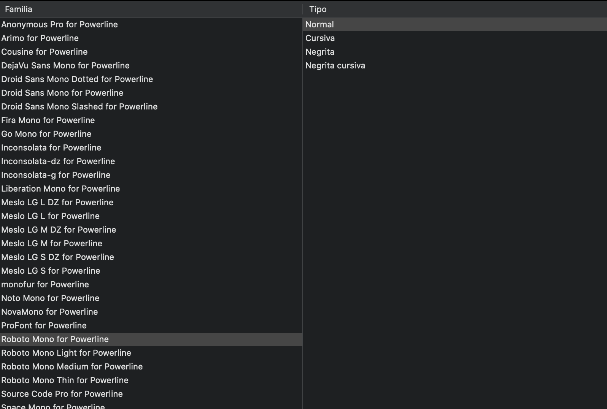
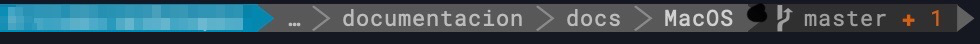
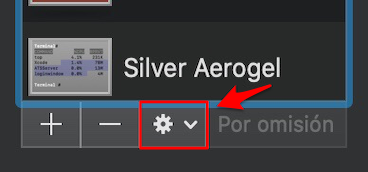
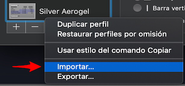

Terminal
Personalizando el terminal#
Powerline es una utilizar que nos permite personalizar nuestra terminal.
Las instalación de esta herramienta es sencilla, aunque necesitaremos el gestor de paquetes pip proporcionado por Python.
- Instalando python a través del gestor de paquetes Homebrew
brew install python
- Instalando powerline
pip3 install --user powerline-status
Para comprobar la ruta donde se ha instalado esta utilidad ejecutaremos el siguiente comando:
pip3 show powerline-status
Aparecerá una serie de información, entre ellas una línea que comienza por "Location", la cual nos informa de la ruta. Es importante tenerla en cuenta ya que será necesario para las siguientes configuraciones.
Lo siguiente que haremos será introducirlo en el fichero .bash_profile (es uno de los ficheros utilizados por bash para configurar el etorno del sistema) de nuestro usuario. En caso de que este fichero no se encuentre en nuestro sistema podemos crearlo ejecutando vim .bash_profile.
A este archivo le añadiremos lo siguiente:
#Añadimos python a la variable PATH
export PATH=$PATH:$HOME/Librar/Python/3.7/bin
#Habilitamos powerline
powerline-daemon -q
POWERLINE_BASH_CONTINUATION=1
POWERLINE_BASH_SELECT=1
source $HOME/Library/Python/3.7/lib/python/site-packages/powerline/bindings/bash/powerline.sh
Copiando la configuración#
Para una edición posterior de los ficheros de configuración que nos permitirán personalizar powerline al extremo, es necesario copiar el directorio config_flies a nuestro $HOME. Para ello ejecutaremos los siguiente comandos:
#Creamos el directorio en nuestro $HOME
mkdir ~/.config/powerline
#Copiamos los ficheros de configuración
cp -R $HOME//Library/Python/3.7/lib/python/site-packages/powerline/config_files/* ~/.config/powerline
El siguiente paso será realizar una modificación en un fichero de configuración que se encuentra en la ruta ~/.config/powerline/config.json. Debemos modificar el bloque que hace referencia a la shell, cambiando el tema a default_leftonly.
"shell": {
"colorscheme": "default",
"theme": "default_leftonly",
"local_themes": {
"continuation": "continuation",
"select": "select"
}
Tip
Después de realizar cambios en los ficheros de configuración es imprescindible ejecutar el comando powerline-daemon --replace.
Instalando las fuentes#
# Clonación del repositorio
git clone https://github.com/powerline/fonts.git --depth=1
# Instalación de las fuentes
cd fonts
./install.sh
# Eliminamos el repositorio descargado
cd ..
rm -rf fonts
Como se puede observar en el script de instalación (install.sh), al realizar la instalación en MacOS las fuentes se almacenan en la ruta $HOME/Library/Fonts.
Para que la terminal muestre correctamente los iconos, es necesario cambiar la fuente en la configuración del terminal a una de las descargadas compatibles con powerline.

Powerline-gitstatus#
Es un pequeño "plugin" que utilizamos para añadir información sobre git en el prompt. El listado de información que es capaz de mostrar se puede encontrar aquí.
Podemos utilizar el gestor de paquetes pip para instalarlo.
pip install --user powerline-gitstatus
Una vez que lo hayamos instalado (podemos comprobarlo ejecutando pip list installed | grep gitstatus) debemos modificar dos ficheros de configuración.
- Esquema de colores: el fichero a modificar se encuentra en la ruta
~/.config/powerline/colorschemes/shell/default.json.
{
"groups": {
"gitstatus": { "fg": "gray8", "bg": "gray2", "attrs": [] },
"gitstatus_branch": { "fg": "gray8", "bg": "gray2", "attrs": [] },
"gitstatus_branch_clean": { "fg": "green", "bg": "gray2", "attrs": [] },
"gitstatus_branch_dirty": { "fg": "gray8", "bg": "gray2", "attrs": [] },
"gitstatus_branch_detached": { "fg": "mediumpurple", "bg": "gray2", "attrs": [] },
"gitstatus_tag": { "fg": "darkcyan", "bg": "gray2", "attrs": [] },
"gitstatus_behind": { "fg": "gray10", "bg": "gray2", "attrs": [] },
"gitstatus_ahead": { "fg": "gray10", "bg": "gray2", "attrs": [] },
"gitstatus_staged": { "fg": "green", "bg": "gray2", "attrs": [] },
"gitstatus_unmerged": { "fg": "brightred", "bg": "gray2", "attrs": [] },
"gitstatus_changed": { "fg": "mediumorange", "bg": "gray2", "attrs": [] },
"gitstatus_untracked": { "fg": "brightestorange", "bg": "gray2", "attrs": [] },
"gitstatus_stashed": { "fg": "darkblue", "bg": "gray2", "attrs": [] },
"gitstatus:divider": { "fg": "gray8", "bg": "gray2", "attrs": [] }
}
}
- Segmento: el fichero a modificar se encuentra en la ruta
~/.config/powerline/themes/shell/default_leftonly.json.
{
"function": "powerline_gitstatus.gitstatus",
"priority": 40
}

Warning
La ruta de los ficheros puede variar.
Temas para el terminal#
La terminal por defecto de MacOS permite añadir importar temas. Los temas pueden ser desarrollados por nosotros o descargados desde internet. Para importar un tema debemos abrir el panel de preferencias de la terminal.
- Desplegar el menú de configuración.

- Seleccionar la opción Importar:
